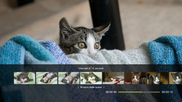
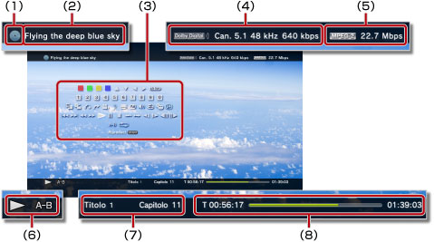

Video > Utilizzo del pannello di controllo
Utilizzo del pannello di controllo
Il pannello di controllo a schermo consente di eseguire varie operazioni. Il pannello di controllo può essere visualizzato o nascosto premendo il tasto  .
.
Di seguito è disponibile una definizione delle icone visualizzate in questa pagina:
 |
Video registrato su un BD (Blu-ray Disc) di sola lettura |
|---|---|
 |
Video registrato su un BD riscrivibile |
 |
Video registrato nel formato AVCHD |
 |
|
 |
Video registrato in modalità VR su DVD-R/DVD-RW |
 |
File video salvati sul disco rigido |
 |
File video salvati su supporti di memorizzazione* |
| * |
Con alcuni modelli, per utilizzare supporti di memorizzazione è necessario disporre di un adattatore USB appropriato (non in dotazione). |
|---|
Avviso
Alcuni contenuti potrebbero essere associati a condizioni di riproduzione predefinite dallo sviluppatore dei contenuti. In questi casi, è possibile che alcune voci del pannello di controllo non siano disponibili.
Icone rosse/verdi/gialle/blu


Eseguono le operazioni corrispondenti all'icona. Le funzioni assegnate all'icona variano in base al contenuto.
Su/Giù/Sinistra/Destra

Selezionano un elemento.
Invio
Conferma la voce selezionata.
Tastierino numerico

Consente di immettere numeri.
Menu a comparsa
Visualizza il menu a comparsa.
Menu
Visualizza il menu.
Menu principale
Visualizza il menu principale.
Ritorna
Torna a un punto specifico del video.
Ricerca delle scene


Utilizzare questa funzione per visualizzare le immagini in miniatura create a determinati intervalli. Selezionare un'immagine in miniatura per avviare la riproduzione del video da quella specifica scena.

1. |
Utilizzare il tasto |
|---|
 o
o  per selezionare l'intervallo di tempo da utilizzare per la creazione delle immagini in miniatura. È possibile selezionare [Capitolo] o uno dei vari intervalli di tempo.
per selezionare l'intervallo di tempo da utilizzare per la creazione delle immagini in miniatura. È possibile selezionare [Capitolo] o uno dei vari intervalli di tempo.2. |
Utilizzare il tasto |
|---|
 o
o  per selezionare l'immagine in miniatura per la scena che si desidera visualizzare. La riproduzione inizia dalla scena selezionata.
per selezionare l'immagine in miniatura per la scena che si desidera visualizzare. La riproduzione inizia dalla scena selezionata.Note
- È possibile selezionare l'opzione [Capitolo] solo per i contenuti video che includono le informazioni sul capitolo.
- La funzione di ricerca delle scene non può essere utilizzata per i contenuti video di durata inferiore ad un minuto.
- La funzione di ricerca delle scene non può essere utilizzata per alcuni altri tipi di contenuto video.
- Quando si seleziona un'immagine in miniatura, viene riprodotta un'anteprima della scena per circa 15 secondi.
Vai a


Riproduce a partire da un capitolo o tempo specificato.
| Titolo X | Specifica il numero del titolo. |
|---|---|
| Capitolo X | Specifica il numero del capitolo. |
| XX:XX / XX:XX:XX | Specifica il tempo. |
Nota
A seconda del file video, potrebbe non essere possibile utilizzare (Vai a).
Opzioni di angolo
Selezionare uno degli angoli di visualizzazione disponibili per il contenuto registrato con angoli multipli.
Opzioni dell'audio
Selezionare una delle opzioni dell'audio disponibili per il contenuto registrato con piste audio multiple.
Opzioni dei sottotitoli
Selezionare una delle opzioni dei sottotitoli disponibili per il contenuto registrato con lingue multiple per i sottotitoli.
Opzioni dello stile dei sottotitoli
Selezionare una delle opzioni di visualizzazione disponibili per il contenuto registrato con stili multipli per i sottotitoli.
Regolazione del volume
Regolare il livello di uscita del volume per il contenuto riprodotto sotto  (Video). Selezionare uno dei nove livelli.
(Video). Selezionare uno dei nove livelli.
Note
- L'audio può essere distorto se il livello di uscita del volume è troppo alto. In questo caso, abbassare il livello di uscita del volume.
- Questa impostazione potrebbe essere disabilitata quando si utilizzano alcuni dispositivi audio o si riproducono alcuni tipi di audio.
Impostazioni AV
Consente di regolare le impostazioni relative all'uscita del contenuto riprodotto in (Video). Le voci visualizzate dipendono dal contenuto.
| Riduzione dei disturbi nei fotogrammi | Impostare per ridurre il rumore fine. |
|---|---|
| Riduzione dei disturbi di blocco | Impostare per ridurre i disturbi di blocco a mosaico visualizzati sullo schermo. |
| Riduzione Mosquito Noise | Consente di ridurre il cosiddetto Mosquito Noise visibile ai margini delle immagini. |
| Potenzia risoluzione | Impostare il livello di potenziamento della risoluzione. Il valore impostato è riportato in [Potenziatore risoluzione] sotto  (Impostazioni) > (Impostazioni) >  (Impostazioni video). (Impostazioni video). |
| Formato di uscita video | Consente di impostare il formato di uscita video. Selezionare il formato di uscita video per la riproduzione di dischi DVD o BD. Il valore impostato viene riflesso in [Formato di uscita video BD/DVD (HDMI)] in (Impostazioni) > (Impostazioni video). |
| Y Pb / Cb Pr / Cr Superbianco | Impostazione per la visualizzazione in superbianco. È possibile generare segnali superbianco durante la riproduzione di dischi DVD, BD o AVCHD. Il valore impostato viene riportato in [Y Pb/Cb Pr/Cr Superbianco (HDMI)] in (Impostazioni) >  [Impostazioni di visualizzazione]. [Impostazioni di visualizzazione]. |
| RGB gamma completa | Consente di impostare la visualizzazione RGB gamma completa. Il valore impostato viene riportato in [RGB gamma completa] in (Impostazioni) > (Impostazioni di visualizzazione). |
| Controllo gamma dinamica | Consente di impostare il controllo della gamma dinamica. Consente di abilitare o disabilitare la funzionalità di controllo della gamma dinamica del sistema PS3™ durante la riproduzione di BD e DVD che producono audio Dolby Digital. Il valore impostato è riflesso in [Controllo gamma dinamica BD/DVD] sotto (Impostazioni) > (Impostazioni video). |
| Formato di uscita audio | Consente di impostare il formato di uscita audio. Selezionare il formato di uscita audio per la riproduzione di DVD o BD. Il valore selezionato è riportato in [Formato di uscita audio BD/DVD (HDMI)] o [Formato di uscita BD audio (digitale ottico)] sotto (Impostazioni) > (Impostazioni video). |
Opzioni di durata
Selezionare per visualizzare il tempo trascorso o il tempo rimanente per un titolo o un capitolo. Le voci visualizzate variano in base al contenuto riprodotto.
Modalità dello schermo
Modificare la modalità dello schermo.
| Normale | Impostare per visualizzare il video in modo che si adatti alle dimensioni dello schermo senza modificare le proporzioni. |
|---|---|
| Zoom | Impostare per visualizzare il video alle dimensioni massime dello schermo, senza modificare le proporzioni. Le parti del video nella parte superiore, inferiore, sinistra e destra vengono tagliate. |
| Schermo intero | Effettuare l'impostazione per visualizzare il contenuto a schermo intero cambiando le proporzioni e allungando l'immagine verticalmente e orizzontalmente. |
| Originale | Impostare per visualizzare il video nel formato originale. |
Nota
In base al file video, potrebbe essere impossibile modificare la modalità dello schermo.
Cambia icona
Cambia l'icona (immagine in miniatura) associata a un file video. Durante la riproduzione del file video, selezionare (Cambia icona) quando viene visualizzata l'immagine che si desidera selezionare come icona.
Note
- In base al file video, potrebbe essere impossibile cambiare l'icona.
- Non è possibile utilizzare come icona un file video inferiore a due secondi.
Elimina
Elimina un file video in fase di riproduzione.
Visualizza
Visualizza lo stato di riproduzione e altre informazioni correlate. Le informazioni visualizzate variano in base al contenuto riprodotto.

(1) |
Supporto |
|---|---|
(2) |
Titolo |
(3) |
Pannello di controllo |
(4) |
Codec audio/numero canali/ frequenza di campionamento/velocità di trasmissione |
(5) |
Codec video/velocità di trasmissione |
(6) |
Icona di stato |
(7) |
Titolo/capitolo |
(8) |
Tempo trascorso/totale |
Precedente (Torna all'inizio)/Seguente
Passa al capitolo precedente o successivo.
Nota
Quando si riproducono file video salvati su supporti di memorizzazione o sul disco rigido,  (Seguente) non è disponibile. Inoltre, se si seleziona
(Seguente) non è disponibile. Inoltre, se si seleziona  (Precedente) la riproduzione riprende dall'inizio del file video.
(Precedente) la riproduzione riprende dall'inizio del file video.
Indietro veloce/Avanti veloce
Scorre rapidamente all'indietro o in avanti il contenuto riprodotto. Ad ogni pressione del tasto  , la velocità di riproduzione cambia.
, la velocità di riproduzione cambia.
Riproduci
Avvia la riproduzione del contenuto.
Nota
Nella maggior parte dei casi, alla successiva riproduzione di un contenuto video che è stato interrotto durante la riproduzione, la riproduzione verrà ripresa dal punto di interruzione precedente.
Per riprodurre dall'inizio, premere il tasto PS per interrompere la riproduzione e visualizzare il menu XMB™. Selezionare l'icona, premere il tasto e selezionare quindi [Riproduci dall'inizio] nel menu opzioni.
Pausa
Arresta temporaneamente la riproduzione.
Ferma
Interrompe la riproduzione.
Salta veloce (indietro)/Salta veloce (avanti)
Passa a un punto del video 15 secondi indietro o 15 secondi avanti.
Lento (indietro)/Lento (avanti)
Riproduce in modalità lenta.
Indietro per fotogrammi/Avanzamento per fotogrammi
Riproduce un fotogramma alla volta.
Ripetizione A-B
Riproduce ripetutamente una sezione specificata del contenuto.
1. |
All'inizio della sezione da ripetere, selezionare |
|---|---|
2. |
Alla fine della sezione da ripetere, premere il tasto |
Nota
Per annullare la funzione Ripetizione A-B, selezionare (Ripetizione A-B).
Ripeti
Riproduce ripetutamente il contenuto.
Nota
Per annullare la funzione Ripeti, selezionare (Ripeti) finché non viene visualizzato [Ripetizione disattivata].